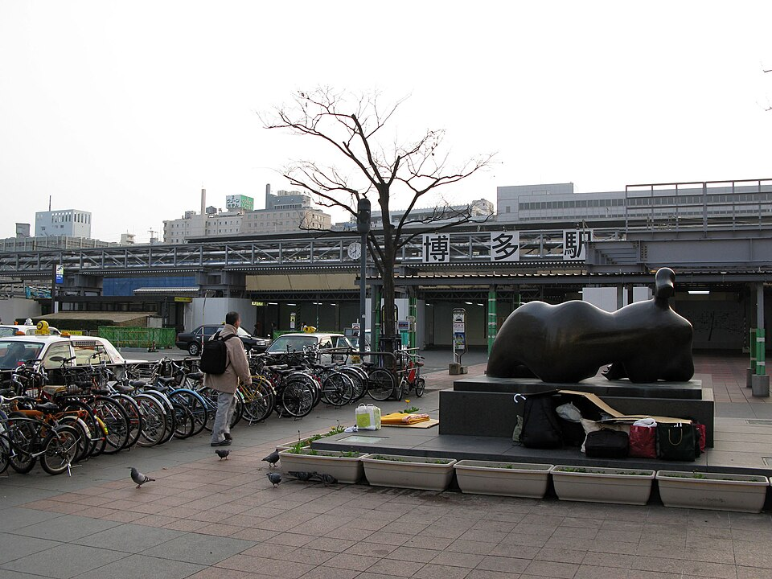
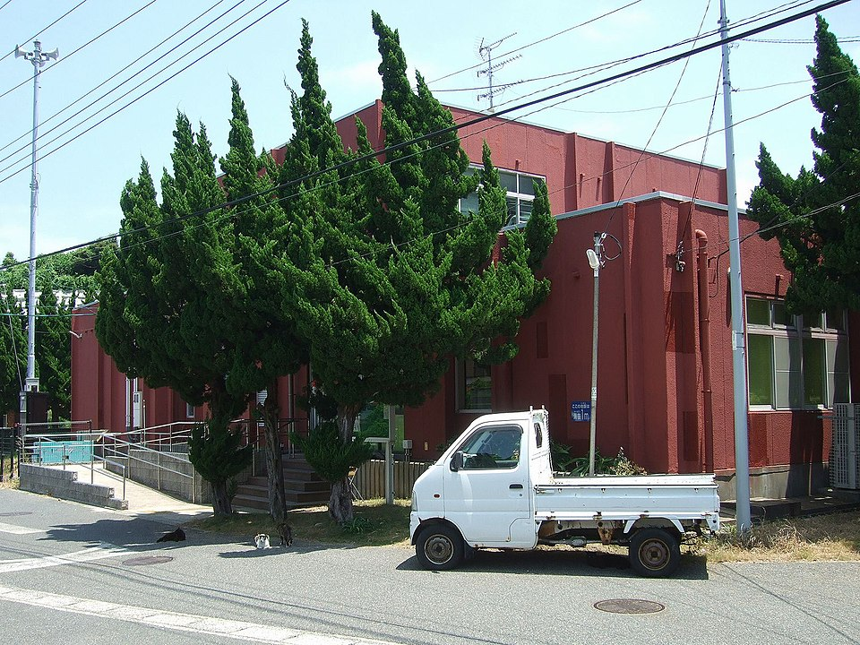
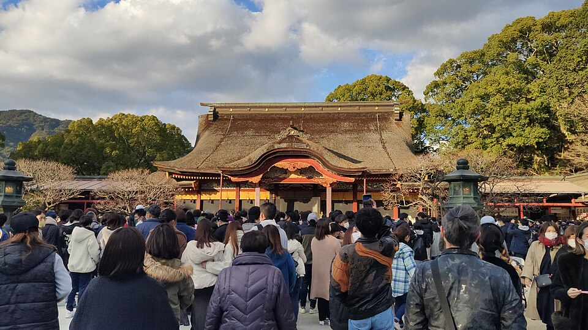
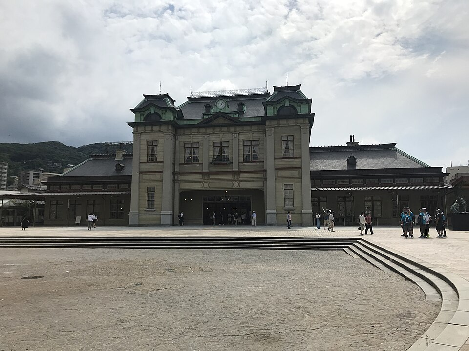

情侶・第一次・博多基地
福岡 8 晚：貓島、太宰府、門司港，少排隊吃拉麵與烏龍，天神逛街。
桃園出發、全程住博多駅。把船班銜接、JR 動線、可預約餐廳和伴手禮清單放在手機上； 可下載 .ics 提醒訂機票、貓島早班、餐廳預約與返程。




出發包
行事曆提醒
下載 .ics 提醒
含訂機票、貓島早班、太宰府巴士、門司港出發、餐廳預約與返程鬧鐘。
使用方式
下載後加入 Google／Apple 行事曆。出發前把航班時間改成你實際訂的班次。
9 月注意
相島渡輪為夏令時刻（至 10/31）；新宮町巴士時刻出發前再查官網。
每日行程
9/19 – 9/27 每日行程
交通速查
交通與價格速查
專家檢查
自由行專家檢查
預算
價格預估（2 人）
行前說明
台灣出發・日本自由行提醒
餐廳
少排隊美食清單（含備選）
咖啡
咖啡廳備選（可塞進任何半天）
逛街
逛街商圈與店家
夜間
屋台・中洲・居酒屋
行前提醒
福岡習慣與避坑
參考來源
資料來源
預約清單
預約與出發前清單
備註